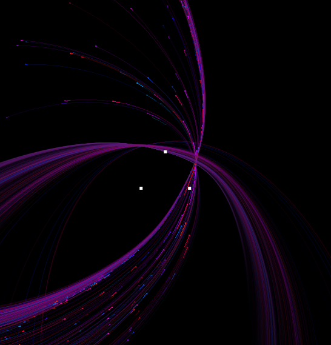
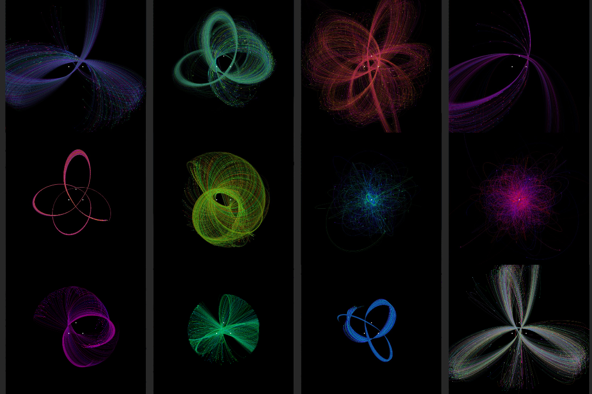
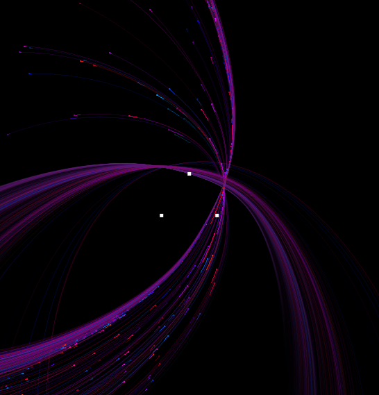
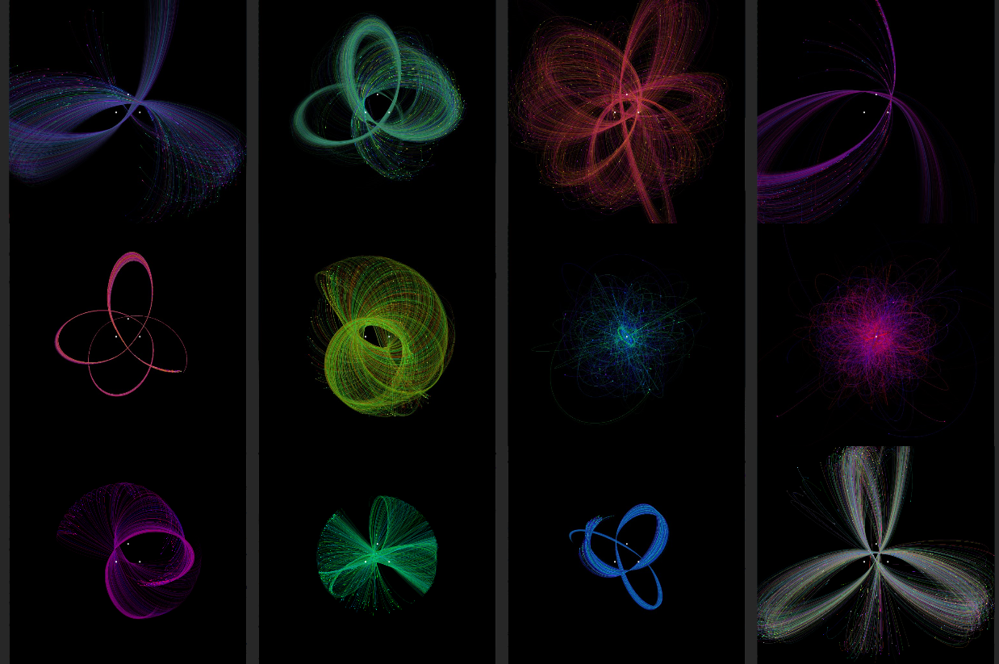

N-Body Simulator
Project - Computational Astrophysics
A simulator for the n-body problem, studying how extremely minor changes in initial conditions propagate into massive changes. Visualize chaos theory and orbital body collision simulations for up to 20k particles.
Process
For orbital simulation, can enable collisions between masses as well. For instability from initial conditions, enable single start point and set a low delta for slower chaos.
Written to practice C++, using the GLFW library with OpenGL for a simple renderer. Run simulator.exe or compile with MinGW.
.
 


